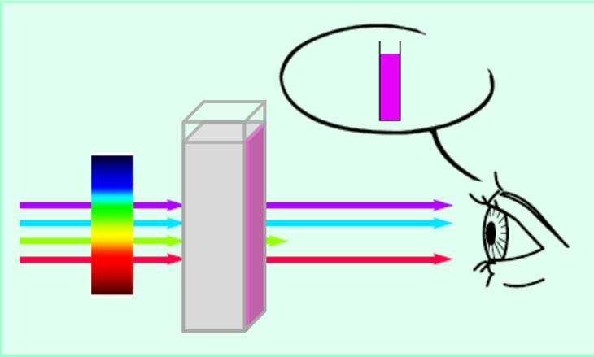
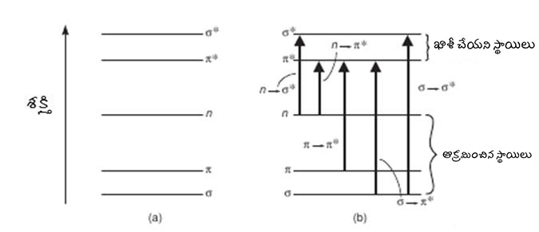
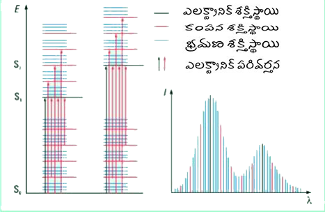
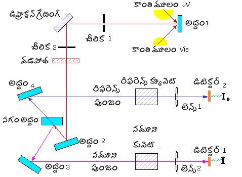

కెమికల్ సైన్సెస్
→
మాలిక్యులర్ శోషణ స్పెక్ట్రోస్కోపీ ల్యాబ్
→
ప్రయోగాల జాబితా
అల్ట్రావైయోలెట్-విసిబ్లె శోషణ స్పెక్ట్రోస్కోపీతో పరిచయం
రంగు చాలా పదార్థాల యొక్క ముఖ్యమైన ఆస్తి. మెటాలిక్ బంగారాన్ని దాని మెరిసే నారింజ-పసుపు రంగు ద్వారా మనం గుర్తించగలం. కాంతి లేదా విద్యుదయస్కాంత వికిరణం యొక్క పరస్పర చర్య విద్యుదయస్కాంత వికిరణం యొక్క చెదరగొట్టడం, శోషణ, ప్రతిబింబం, విక్షేపం మొదలైన వాటికి దారితీస్తుంది. ఈ ప్రభావాలు పదార్ధంలో రంగును పెంచుతాయి. కొంత కాంతి గ్రహించి, మిగిలినవి పదార్ధం ద్వారా వ్యాపిస్తే, ప్రసారం చేయబడిన రేడియేషన్కు సంబంధించి పదార్థాన్ని పారదర్శక మాధ్యమం అంటారు. అపారదర్శక మాధ్యమంలో దాదాపు అన్ని కాంతి ప్రతిబింబిస్తుంది. కాంతి యొక్క అన్ని రంగులు ఉన్నప్పుడు తెలుపు రంగు ఉత్పత్తి అవుతుంది. మరోవైపు, కాంతి యొక్క అన్ని రంగులు లేనప్పుడు (తీసివేయడం, ఫిల్టర్ అవుట్ లేదా గ్రహించడం), నల్ల రంగు ఉత్పత్తి అవుతుంది. మొత్తం కనిపించే స్పెక్ట్రం రంగులను మూడు ప్రధాన ప్రాంతాలుగా విభజించవచ్చని గమనించవచ్చు: ఎరుపు, ఆకుపచ్చ మరియు నీలం (క్రింద ఉన్న మూర్తి 1 చూడండి). ఈ వర్ణపటంలో, రెండు రంగులు కలిపి పసుపు రంగు ఎరుపు మరియు ఆకుపచ్చ మరియు ఆకుపచ్చ మరియు నీలం కలయికల ద్వారా సియాన్ రంగు వంటి మరొక రంగును ఉత్పత్తి చేస్తాయి. అదేవిధంగా, నీలం-ఎరుపు మిక్సింగ్ మెజెంటా రంగును ఉత్పత్తి చేస్తుంది. రెండు రంగులను కలపడం ద్వారా ఉత్పత్తి చేయబడిన రంగులు దానిని తయారు చేయడానికి ఉపయోగించని రంగుకు పరిపూరకం అని చెబుతారు. ఉదాహరణకు, ఎరుపు, ఆకుపచ్చ మరియు నీలం రంగులలో, ఎరుపు మరియు ఆకుపచ్చ కలయిక పసుపు రంగును ఉత్పత్తి చేస్తుంది (నీలం ఉపయోగించబడలేదు) మరియు అందువల్ల నీలం యొక్క పరిపూరకరమైన రంగు పసుపు. తెల్లని కాంతిని ఉత్పత్తి చేయడానికి కలిపే ఒక జత రంగులను పరిపూరకరమైన రంగులు అంటారు, ఎందుకంటే అవి కలిసి స్పెక్ట్రంను పూర్తి చేస్తాయి. పూర్తి కనిపించే స్పెక్ట్రంను ప్రధానంగా రంగుల యొక్క 3 ప్రధాన ప్రాంతాలుగా విభజించవచ్చని మేము ఇంతకు ముందే చూశాము: ఎరుపు, ఆకుపచ్చ మరియు నీలం (క్రింద ఉన్న మూర్తి 1 చూడండి), రంగు యొక్క ప్రతి ప్రాంతం స్పెక్ట్రం యొక్క మూడింట ఒక వంతు (1/3) తోడ్పడుతుంది . అందువల్ల, కాంతి యొక్క ఎరుపు మరియు ఆకుపచ్చ రంగులు కలిపి పసుపు రంగును ఉత్పత్తి చేసినప్పుడు, మొత్తం కనిపించే స్పెక్ట్రం యొక్క మూడింట రెండు వంతుల (ఎరుపు నుండి 1/3 ఆకుపచ్చ నుండి 1/3) ఉపయోగించబడుతుంది మరియు మూడింట ఒక వంతు (నీలం ప్రాంతం నుండి) మాత్రమే మిగిలి ఉంటుంది . అందువల్ల ఈ 1/3 నీలం ప్రాంతాన్ని పసుపు రంగు యొక్క 2/3 (ఎరుపు నుండి 1/3 + ఆకుపచ్చ నుండి 1/3) కు చేర్చడం మొత్తం స్పెక్ట్రంను పూర్తి చేస్తుంది. అందువలన, నీలం పసుపు యొక్క పరిపూరకరమైన రంగు మరియు దీనికి విరుద్ధంగా ఉంటుంది.
మూర్తి 1. a) కనిపించే స్పెక్ట్రం యొక్క ప్రధాన మూడు ప్రాంతాలు. బి) మూడు ప్రధాన రంగులు సంకలితంగా కలిపి వివిధ రంగులను (తెలుపు నేపథ్యం లేనప్పుడు) మరియు తెలుపు కాంతిని ఉత్పత్తి చేస్తాయి. (సి) కాంప్లిమెంటరీ రంగులు. వ్యతిరేక త్రిభుజాలు పరిపూరకరమైన రంగులకు అనుగుణంగా ఉంటాయి. త్రిభుజంలోని ఏదైనా రంగు రెండు ప్రక్కనే ఉన్న త్రిభుజాలపై రంగుల కలయిక ద్వారా ఉత్పత్తి అవుతుంది. (డి) రంగుల యొక్క వివిధ వ్యవకలన కలయికల ద్వారా రంగుల ఉత్పత్తి (తెలుపు నేపథ్యం సమక్షంలో).
ఇతర రంగులు మరియు పరిపూరకరమైన రంగులను ఉత్పత్తి చేసే రంగుల కలయిక క్రింది చిత్రంలో రంగు బహుభుజి రూపంలో ఇవ్వబడుతుంది. ఎరుపు యొక్క పరిపూరకరమైన రంగు సియాన్ మరియు ఆకుపచ్చ రంగు మెజెంటా. పెయింటింగ్, ఫోటోగ్రఫీ, ప్రింటింగ్, ఫాబ్రిక్ డైయింగ్ మొదలైన మా ఆచరణాత్మక అనువర్తనాలలో, రంగులు వ్యవకలన సూత్రాల ద్వారా ఉత్పన్నమవుతాయి. ఇటువంటి సందర్భాల్లో, ఒకటి తెల్లని నేపథ్యంతో లేదా అన్ని లైట్ల ఉనికితో మొదలై ఈ వైట్ లైట్ స్పెక్ట్రం నుండి కొన్ని లైట్లను తీసివేస్తుంది మరియు దాని నుండి వచ్చే ఇతర రంగుల కలయికను గమనిస్తుంది. పెయింట్స్, సిరాలు, ఫిల్టర్లు మొదలైనవి కొంత కాంతిని తీసివేయడానికి ఉపయోగిస్తారు. వ్యవకలన మిశ్రమ సూత్రం ద్వారా రంగు ఉత్పత్తిని అర్థం చేసుకోవడానికి, మేము ఈ క్రింది ఉదాహరణను పరిశీలిస్తాము. కాగితంపై కొంత సిరా వేద్దాం. కనిపించే కాంతి యొక్క దాదాపు అన్ని రంగుల ప్రతిబింబం కారణంగా కాగితం ముక్క తెల్లని నేపథ్యాన్ని కలిగి ఉంటుంది. సిరా ఈ స్పెక్ట్రం నుండి కొంత కాంతిని తీసివేస్తుంది (గ్రహిస్తుంది) మరియు మిగిలిన కాంతి యొక్క ప్రతిబింబాన్ని అనుమతిస్తుంది. సిరా పసుపు రంగును (ఎరుపు మరియు ఆకుపచ్చ రంగు ప్రాంతాల కలయిక) తీసివేస్తుంది (గ్రహిస్తుంది) అని మనం అనుకుంటే, అప్పుడు ఎరుపు మరియు ఆకుపచ్చ రంగులు స్పెక్ట్రం నుండి లేవు మరియు స్పెక్ట్రం యొక్క ప్రధానంగా నీలి ప్రాంతం ప్రతిబింబిస్తుంది. అందువల్ల సిరా నీలం రంగులో కనిపిస్తుంది. అదేవిధంగా పసుపు సిరా ఎరుపు మరియు ఆకుపచ్చ కాంతిని ప్రతిబింబిస్తుంది మరియు నీలి కాంతిని గ్రహిస్తుంది. ఒక రంగు దాని పరిపూరకరమైన రంగును తీసివేస్తుంది. పారదర్శక పరిష్కారం యొక్క కింది ఉదాహరణను చూద్దాం. కింది మూర్తి 2 లో, ప్రధానంగా ఆకుపచ్చ కాంతి గ్రహించబడుతుంది మరియు దాని పరిపూరకరమైన రంగు మెజెంటా ద్రావణం యొక్క రంగుగా గమనించబడుతుంది.

మూర్తి 2. ఒక ద్రావణంలో కాంతి శోషణ మరియు రంగు ఉత్పత్తి.
కాంతి శక్తిని శోషించడం అనేది రేడియేషన్ క్షేత్రం నుండి శోషకానికి శక్తిని బదిలీ చేయడం, దీనివల్ల శోషక తక్కువ నుండి అధిక శక్తి స్థాయికి మారుతుంది. UV- కనిపించే కాంతిని శోషించడం ఒక శక్తి స్థాయి నుండి మరొకదానికి ఎలక్ట్రాన్ల ఉత్సాహానికి దారితీయవచ్చు (ఇతర పరిస్థితులకు లోబడి). UV- కనిపించే కాంతి ఉత్తేజితం కింద ఎలక్ట్రానిక్ పరివర్తనాల అధ్యయనాన్ని UV- కనిపించే శోషణ స్పెక్ట్రోస్కోపీ అంటారు. ఒక అణువులో, భూమి మరియు ఉత్తేజిత ఎలక్ట్రానిక్ శక్తి స్థితుల మధ్య శక్తి అంతరం కేంద్రకాలు మరియు ఎలక్ట్రాన్ల మధ్య బంధం బలం ద్వారా నిర్ణయించబడుతుంది. అందువల్ల, పరివర్తన యొక్క లక్షణ శక్తి మరియు రేడియేషన్ యొక్క తరంగదైర్ఘ్యం అణువుల సమూహం యొక్క లక్షణాలు. అటువంటి శోషణకు కారణమయ్యే అణువుల సమూహాన్ని క్రోమోఫోర్ అంటారు. Π క్రోమోఫోర్తో జతచేయబడినప్పుడు షేర్ చేయని జత ఇ యొక్క OH, NH, SH, మొదలైన పదార్ధాలు సాధారణంగా శోషణ గరిష్టంగా ఎక్కువ తరంగదైర్ఘ్యానికి కదులుతాయి. ఈ ప్రత్యామ్నాయాలను ఆక్సోక్రోమ్స్ అంటారు. క్రోమోఫోర్పై పదార్ధాలు ఈ క్రింది నాలుగు ప్రభావాలను కలిగి ఉండవచ్చు: (i) బాతోక్రోమిక్ షిఫ్ట్ (రెడ్ షిఫ్ట్) - ఎక్కువ తరంగదైర్ఘ్యం (λ) లేదా తక్కువ శక్తికి మారడం. (ii) హైప్సోక్రోమిక్ షిఫ్ట్ (బ్లూ షిఫ్ట్) - తక్కువ λ లేదా అధిక శక్తికి మారండి. (iii) హైపర్క్రోమిక్ ప్రభావం - బ్యాండ్ యొక్క శోషణ (తీవ్రత) పెరుగుదల. (iv) హైపోక్రోమిజం: బ్యాండ్ యొక్క శోషణ (తీవ్రత) తగ్గుదల. వేర్వేరు పదార్థాలు కాంతి యొక్క వివిధ తరంగదైర్ఘ్యాలను గ్రహిస్తాయి. అందువల్ల, ఒక పదార్ధం ద్వారా గరిష్ట శోషణ యొక్క తరంగదైర్ఘ్యం ఆ పదార్ధం యొక్క లక్షణ లక్షణాలలో ఒకటి.
అత్యంత సంభావ్య పరివర్తన తరచుగా అత్యధిక ఆక్రమిత పరమాణు కక్ష్య (HOMO) నుండి తక్కువ ఖాళీగా లేని పరమాణు కక్ష్య (LUMO) వరకు సంభవిస్తుంది. పాలిటామిక్ అణువులలో, ప్రారంభ మరియు చివరి కక్ష్యలను పేర్కొనడం ద్వారా ఎలక్ట్రానిక్ పరివర్తనలను వర్గీకరించడం సౌకర్యంగా ఉంటుంది. ఉదాహరణకు, ఒక బంధన పై (π) కక్ష్య నుండి యాంటీబాండింగ్ పై కక్ష్య ( * ), మేము దీనిని π → call అని పిలుస్తాము * పరివర్తన మరియు అదేవిధంగా నాన్బాండింగ్ కక్ష్య (n) నుండి యాంటీబాండింగ్ పై కక్ష్య ( * ) ను n as as అంటారు * పరివర్తన. కింది మూర్తి 3 అటువంటి కొన్ని పరివర్తనలను క్రమపద్ధతిలో చూపిస్తుంది

మూర్తి 3. సాధారణ ఎలక్ట్రానిక్ పరివర్తనాలు మరియు కాంతి శోషణలు.
అణువుల సందర్భాల్లో, ఇటువంటి పరివర్తనాలు తరంగదైర్ఘ్యాల వద్ద చాలా ఇరుకైన శోషణ స్పెక్ట్రల్ బ్యాండ్లకు దారి తీయాలి, ఇది శోషక జాతుల శక్తి స్థాయిలలో వ్యత్యాసం యొక్క లక్షణం. అయినప్పటికీ, అణువుల విషయంలో విస్తృత వర్ణపట బ్యాండ్లు తరచుగా గమనించబడతాయి. కంపన మరియు భ్రమణ శక్తుల కంటే ఎలక్ట్రానిక్ శక్తి ఎక్కువగా ఉన్నందున, కంపన మరియు భ్రమణ శక్తి స్థాయిలు ఎలక్ట్రానిక్ శక్తి స్థాయిలపై ఎక్కువగా ఉంటాయి. అందువల్ల, ఏదైనా ఎలక్ట్రానిక్ పరివర్తనం అనేక కంపన మరియు భ్రమణ పరివర్తనాలతో (కొన్ని షరతులకు లోబడి) విభిన్న శక్తులతో విస్తృత బ్యాండ్లకు దారితీస్తుంది (క్రింద ఉన్న మూర్తి 4 చూడండి). ద్రావకం-ద్రావణ పరస్పర చర్యలు స్పెక్ట్రల్ బ్యాండ్ను విస్తృతం చేస్తాయి.

మూర్తి 4. అణువులలో ఎలక్ట్రానిక్ పరివర్తనాలు మరియు UV- కనిపించే స్పెక్ట్రల్ బ్యాండ్ యొక్క మూలం. ఎస్ అంటే సింగిల్ట్ ఎలక్ట్రానిక్ ఎనర్జీ స్టేట్.
ఛార్జ్-ట్రాన్స్ఫర్ ట్రాన్సిషన్ అనేది మరొక రకమైన ఎలక్ట్రానిక్ పరివర్తన, ఇది అనేక పరివర్తన లోహ సముదాయాలు మరియు అకర్బన వర్ణద్రవ్యాల యొక్క తీవ్రమైన రంగుకు కారణమవుతుంది. ఛార్జ్ బదిలీ పరివర్తనాల్లో, ఒక ఎలక్ట్రాన్ లోహం యొక్క d కక్ష్యల నుండి లిగాండ్స్ లేదా υice υersa లో ఖాళీగా ఉన్న కక్ష్యలలో ఒకదానికి బదిలీ అవుతుంది. ఉదాహరణకు, O అణువు నుండి Mn అణువుకు ఎలక్ట్రాన్ బదిలీ సజల పర్మాంగనేట్ అయాన్ యొక్క తీవ్రమైన ple దా రంగుకు కారణమవుతుంది, MnO4 - .
ఒక సాధారణ UV- కనిపించే స్పెక్ట్రోఫోటోమీటర్ కింది డిజైన్ భాగాలను కలిగి ఉండాలి: ఒక కాంతి మూలం (ఇది ఒక నిర్దిష్ట తరంగదైర్ఘ్యం లేదా తరంగదైర్ఘ్యాల వద్ద కాంతిని ఉత్పత్తి చేస్తుంది), ఒక చెదరగొట్టే పరికరం (కాంతి యొక్క వివిధ తరంగదైర్ఘ్యాలను వేర్వేరు కోణాల్లో చెదరగొట్టడానికి కారణమవుతుంది), నమూనా గది మరియు ఒకటి లేదా ఎక్కువ డిటెక్టర్ (లు). VU- కనిపించే స్పెక్ట్రోఫోటోమీటర్లలో రెండు కాంతి వనరులు ఉండవచ్చు: ఒకటి UV పరిధికి (ఉదా. డ్యూటెరియం ఆర్క్ లాంప్) మరియు మరొకటి కనిపించే పరిధికి (ఉదా., టంగ్స్టన్-హాలోజన్ దీపం).
చెదరగొట్టే పరికరం మూల కాంతిని తరంగదైర్ఘ్యాల యొక్క "ఇంద్రధనస్సు" లోకి (అనగా, కాంతి యొక్క వివిధ తరంగదైర్ఘ్యాలలోకి) చెదరగొడుతుంది, తరువాత వాటిని నమూనాకు నిర్దేశిస్తారు. ప్రిజమ్స్ మరియు హోలోగ్రాఫిక్ గ్రేటింగ్లు సాధారణంగా UV- కనిపించే స్పెక్ట్రోఫోటోమీటర్లలో ఉపయోగించే రెండు చెదరగొట్టే పరికరాలు. సాంప్రదాయిక స్పెక్ట్రోఫోటోమీటర్లో, ప్రవేశద్వారం చీలిక మరియు చెదరగొట్టే పరికరం చుట్టూ ఉన్న నిష్క్రమణ చీలిక కలిసి మోనోక్రోమ్యాటర్ను కలిగి ఉంటాయి. మోనోక్రోమాటర్ నుండి వచ్చే కాంతి నమూనా ఖాళీ మరియు / లేదా నమూనా గుండా వెళుతుంది. ప్రసారం చేయబడిన కాంతి యొక్క తీవ్రతను ఫోటోడెటెక్టర్తో కొలుస్తారు. ఫోటోమల్టిప్లియర్ గొట్టాలు (పిఎమ్టి) లేదా ఫోటోడియోడ్లు (ఫోటోడియోడ్ అర్రే) సాధారణంగా డిటెక్టర్లుగా ఉపయోగిస్తారు. నమూనా వెనుక ఉన్న ఫోటోడెటెక్టర్ కాంతి ఉద్దీపనను అందుకుంటుంది మరియు అనలాగ్ ఎలక్ట్రానిక్ కరెంట్ను ఉత్పత్తి చేస్తుంది, తరువాత దానిని ఉపయోగించదగిన ఫార్మాట్గా మార్చబడుతుంది మరియు తదుపరి విశ్లేషణ కోసం కంప్యూటర్లోకి ఇవ్వబడుతుంది. సాంప్రదాయిక స్పెక్ట్రోఫోటోమీటర్లో, స్పెక్ట్రం ఒక క్రమ పద్ధతిలో, ఒక తరంగదైర్ఘ్యం ఒకదాని తరువాత ఒకటి, సమయం యొక్క విధిగా పొందబడుతుంది. డయోడ్ అర్రే స్పెక్ట్రోఫోటోమీటర్లో, నమూనా గుండా వెళ్ళిన తరువాత పాలిక్రోమటిక్ లైట్ పాలిక్రోమాటర్ యొక్క ప్రవేశ చీలికపై కేంద్రీకృతమై ఉంటుంది. ఈ ప్రసారం చేయబడిన కాంతి డయోడ్ శ్రేణిపై చెదరగొట్టబడుతుంది, ఇక్కడ ప్రతి డయోడ్ స్పెక్ట్రం యొక్క కొంత భాగాన్ని కొలుస్తుంది. అంటే, డయోడ్ అర్రే స్పెక్ట్రోఫోటోమీటర్లో, డిటెక్టర్ అన్ని తరంగదైర్ఘ్యాలను ఒకేసారి చూస్తుంది.
కాంతి పుంజం మీద ఆధారపడి, రెండు రకాల స్పెక్ట్రోఫోటోమీటర్లను ఉపయోగిస్తారు: సింగిల్-బీమ్ మరియు డబుల్-బీమ్ స్పెక్ట్రోఫోటోమీటర్లు. సింగిల్-బీమ్ సాంప్రదాయ మరియు డయోడ్ అర్రే స్పెక్ట్రోఫోటోమీటర్లను కలిగి ఉంటుంది, ఇక్కడ ఒకే కాంతి పుంజం మొదట నమూనాను ఖాళీగా మరియు తరువాత నమూనాను విడిగా ప్రకాశిస్తుంది. డబుల్ బీమ్ వాయిద్యం కాంతి పుంజాన్ని రిఫరెన్స్ (నమూనా ఖాళీ) ఆప్టికల్ మార్గం మరియు నమూనా ఆప్టికల్ మార్గం మధ్య విభజిస్తుంది మరియు వాటి మధ్య కాంతి తీవ్రతను పోలుస్తుంది. పుంజం యొక్క విభజన రెండు విధాలుగా సాధించబడుతుంది. స్టాటిక్ పద్ధతిలో, పాక్షికంగా ప్రసారం చేసే అద్దం ఉపయోగించబడుతుంది, ఇది కాంతిని రిఫరెన్స్ సెల్ మరియు నమూనా కణానికి ఒకేసారి పంపించడానికి అనుమతిస్తుంది. కొన్ని స్పెక్ట్రోఫోటోమీటర్లలో, "ఛాపర్" కాంతి మార్గాన్ని ప్రత్యామ్నాయం చేస్తుంది. స్పెక్ట్రోఫోటోమీటర్లు రెండూ ఒకదానికొకటి కొన్ని ప్రయోజనాలను కలిగి ఉన్నాయి. డబుల్ బీమ్ వాయిద్యంతో కాంతి వనరు, డిటెక్టర్లు మరియు అనుబంధ ఎలక్ట్రానిక్ పరికరాల మెరుగైన స్థిరత్వాన్ని ఒకరు ఆశిస్తారు. ప్రతికూలతలు మోనోక్రోమీటర్కు చేరుకోవడానికి ముందు కిరణాలను తిరిగి కలపడానికి అవసరమైన ఖచ్చితత్వాన్ని కలిగి ఉంటాయి. అద్దాలు, ఇతర ఆప్టిక్స్ మరియు వాటి పూతలు మరియు ఈ పరికరాల్లో ధూళిని నిర్మించడం యొక్క నాణ్యత డబుల్ బీమ్ పరికరాలను ఒకే పుంజం పరికరాల కంటే నిర్వహించడం కొంత కష్టతరం చేస్తుంది. సింగిల్ బీమ్ వాయిద్యంలో, ఒక క్యూట్ హోల్డర్ మాత్రమే ఉంటుంది, కాబట్టి, రెండు కొలతలు అవసరం. నమూనా మరియు నమూనా ఖాళీ (రిఫరెన్స్) ఒకే కొలతలో ఒకేసారి డబుల్ బీమ్ వాయిద్యంతో స్కాన్ చేయబడతాయి, ఇందులో ఇద్దరు సెల్ హోల్డర్లు ఉన్నారు. డయోడ్ అర్రే స్పెక్ట్రోఫోటోమీటర్ ఒక మల్టీచానెల్ పరికరం, అయితే రెండు కొలతలు అవసరం, అయితే కొలతలు చాలా వేగంగా ఉంటాయి (0.1 సె) మరియు తక్కువ రిజల్యూషన్ కలిగి ఉంటాయి.
సాధారణ డబుల్-బీమ్ UV- కనిపించే స్పెక్ట్రోఫోటోమీటర్ యొక్క స్కీమాటిక్స్ మూర్తి 5 లో క్రింద చూపబడింది.

మూర్తి 5. సాధారణ డబుల్-బీమ్ UV- కనిపించే స్పెక్ట్రోఫోటోమీటర్ యొక్క స్కీమాటిక్స్.
కాంతి యొక్క శోషణ సాధారణంగా ప్రసార (టి) లేదా శోషణ (ఎ) పరంగా ప్రయోగాత్మకంగా కొలుస్తారు. ప్రసారం T = I / I గా నిర్వచించబడింది 0 , ఇక్కడ నేను నమూనా గుండా వెళ్ళిన తరువాత కాంతి తీవ్రత మరియు అయో ప్రారంభ కాంతి తీవ్రత. A మరియు T మధ్య సంబంధం: $$ A = -లాగ్_ {10} T = - log_ {10} {I \ పైగా I_ {0}} $$
కలర్మీటర్ మరియు స్పెక్ట్రోఫోటోమీటర్లు వంటి ఆధునిక శోషణ కొలత సాధనాలు సాధారణంగా డేటాను ట్రాన్స్మిటెన్స్,% -ట్రాన్స్మిటెన్స్ లేదా శోషణగా ప్రదర్శించగలవు. స్పెక్ట్రోఫోటోమీటర్లో, కాంతి తరంగదైర్ఘ్యాల శ్రేణి ఒక కణం (నమూనా కణం) లో తీసుకున్న పదార్ధం లేదా దాని పరిష్కారం గుండా వెళుతుంది మరియు దానిలో ద్రావకాన్ని మాత్రమే కలిగి ఉన్న ఒకేలాంటి కంటైనర్ (రిఫరెన్స్ సెల్) ద్వారా వెళుతుంది. నమూనాలోకి ప్రవేశించే కాంతి యొక్క తీవ్రత మరియు నమూనా నుండి నిష్క్రమించే కాంతి యొక్క స్పెక్ట్రం తగిన స్పెక్ట్రంను ఉత్పత్తి చేయడాన్ని పోల్చారు. వాస్తవానికి, శోషక ప్రయోగంలో తేలికపాటి అటెన్యుయేషన్ ద్రావకం ద్వారా శోషణ, గాలి మరియు నమూనా మధ్య ఇంటర్ఫేస్ నుండి ప్రతిబింబాలు, నమూనా మరియు క్యూవెట్, క్రోమోఫోర్తో పాటు అనేక ప్రక్రియల నుండి సంభవిస్తుంది. I ని నిర్వచించడం ద్వారా ఈ కారకాలు తరచుగా తొలగించబడతాయి
0
నమూనా "ఖాళీ" లేదా సూచన నమూనా ("బేస్లైన్" దిద్దుబాటు) గుండా వెళుతుంది. క్రోమోఫోర్ పదార్థాన్ని మినహాయించి ద్రావకం మరియు ఇతర పదార్థాలు ఏదైనా ఉంటే ఖాళీ లేదా సూచన నమూనా. వివిధ రకాల నమూనా హోల్డర్లు లేదా నమూనా కణాలు అందుబాటులో ఉన్నాయి. నమూనా సెల్ యొక్క ఎంపిక మార్గం పొడవు, ఆకారం, పరిమాణం, ఆసక్తి యొక్క తరంగదైర్ఘ్యం వద్ద ప్రసార లక్షణాలు మొదలైన అనేక అంశాలపై ఆధారపడి ఉంటుంది. నమూనా లేదా దాని ఖాళీని కలిగి ఉన్న సెల్ తరంగదైర్ఘ్యం ప్రాంతానికి పారదర్శకంగా ఉండాలి రికార్డ్ చేయాలి. మెరుగైన UV లైట్ ట్రాన్స్మిషన్ కోసం క్వార్ట్జ్ లేదా ఫ్యూజ్డ్ సిలికా క్యూవెట్ ఎంచుకోబడుతుంది. 350 మరియు 2000 ఎన్ఎమ్ తరంగదైర్ఘ్యాల మధ్య ఉపయోగం కోసం సిలికేట్ గ్లాస్ క్యూవెట్లను ఉపయోగించవచ్చు. కణాలు సాధారణంగా 10 మిమీ నుండి 1 మిమీ వరకు వేర్వేరు మార్గ పొడవులతో దీర్ఘచతురస్రాకారంగా ఉంటాయి.